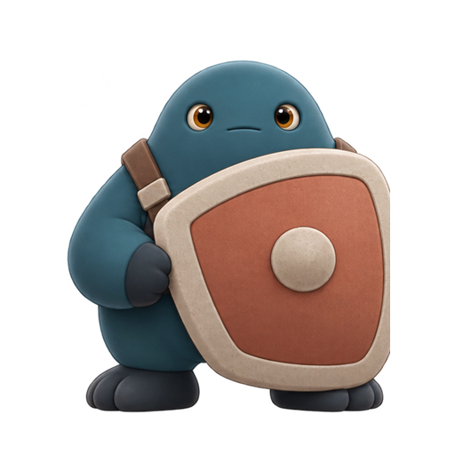

奶丁 · Naiding
naiding_idle_front_static_preview_v01.png · 512×512 · 锚点 (256,466) · 平面高度 215 uu
目标可见高度约为已通过 A1 主角的 0.78×。概念提取帧，尚未清理边缘。
用于核对敌人可读性、画布比例和脚底落点。图像来自已通过的正面概念稿，每只敌人只有一张静态正面帧。
naiding_idle_front_static_preview_v01.png · 512×512 · 锚点 (256,466) · 平面高度 215 uu
目标可见高度约为已通过 A1 主角的 0.78×。概念提取帧，尚未清理边缘。
naidun_idle_front_static_preview_v01.png · 512×512 · 锚点 (256,466) · 平面高度 309 uu

目标可见高度约为已通过 A1 主角的 1.12×。盾牌仍合并在角色图中。
只替换 P4 美术集成预览中由 W3 波次刷出的奶丁/奶盾灰盒。训练敌和弹体仍用灰盒；缺少贴图时回退灰盒。敌人状态、碰撞、伤害、刷怪与波次数据不变。
两张 Texture2D 均已导入，资源路径和纹理设置已回读确认。P4 静态预览 Pawn 源文件已在关闭共享 PCH 的诊断构建中编译；完整编辑器目标因其他模块的头文件错误未通过，因此仍需正常构建并在预览地图检查尺寸、透明边缘、脚底落点和对比度。本轮未运行 PIE/Standalone。